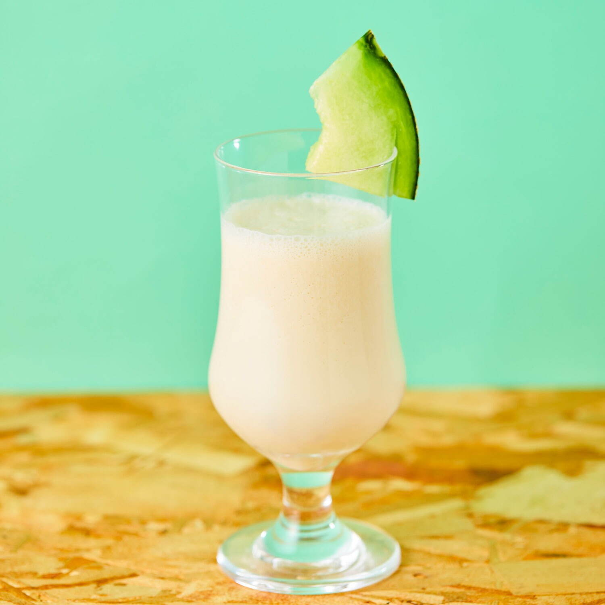

まずは、基本的な情報からです。
生年月日
1993年7月8日生まれ。かに座。血液型はA型。1993年7月8日生まれ。かに座。血液型はA型。1993年7月8日生まれ。かに座。血液型はA型。 1993年7月8日生まれ。かに座。血液型はA型。1993年7月8日生まれ。かに座。血液型はA型。1993年7月8日生まれ。かに座。血液型はA型。 1993年7月8日生まれ。かに座。血液型はA型。1993年7月8日生まれ。かに座。血液型はA型。1993年7月8日生まれ。かに座。血液型はA型。
出身地
大阪府和泉市出身。大阪府和泉市出身。大阪府和泉市出身。大阪府和泉市出身。大阪府和泉市出身。大阪府和泉市出身。 大阪府和泉市出身。大阪府和泉市出身。大阪府和泉市出身。大阪府和泉市出身。大阪府和泉市出身。大阪府和泉市出身。 大阪府和泉市出身。大阪府和泉市出身。大阪府和泉市出身。大阪府和泉市出身。大阪府和泉市出身。大阪府和泉市出身。